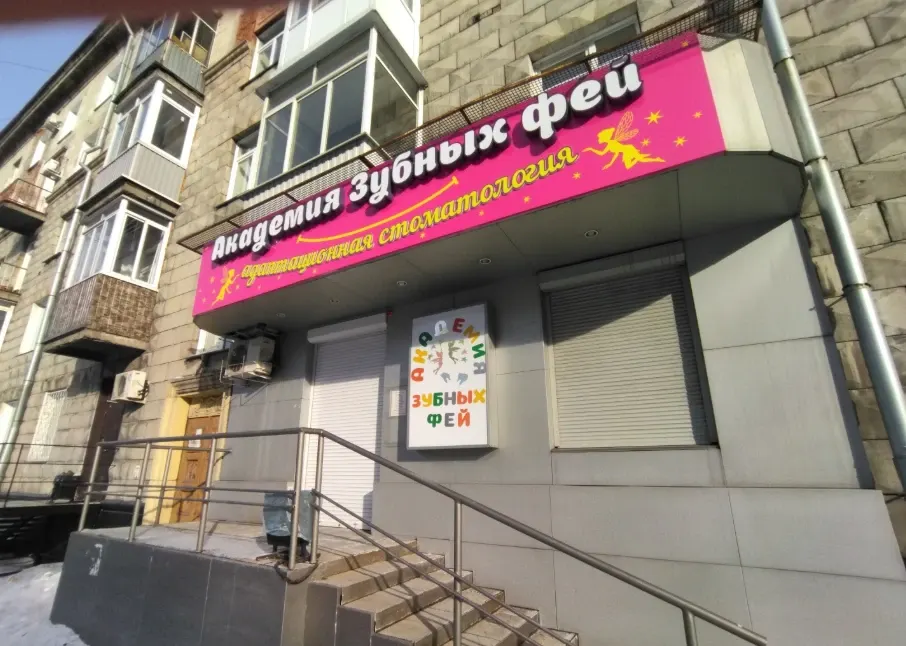
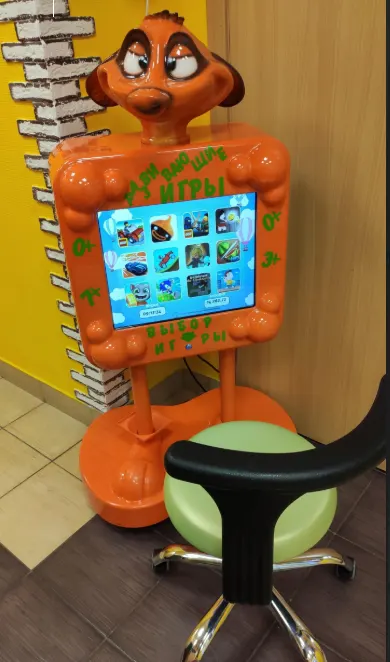
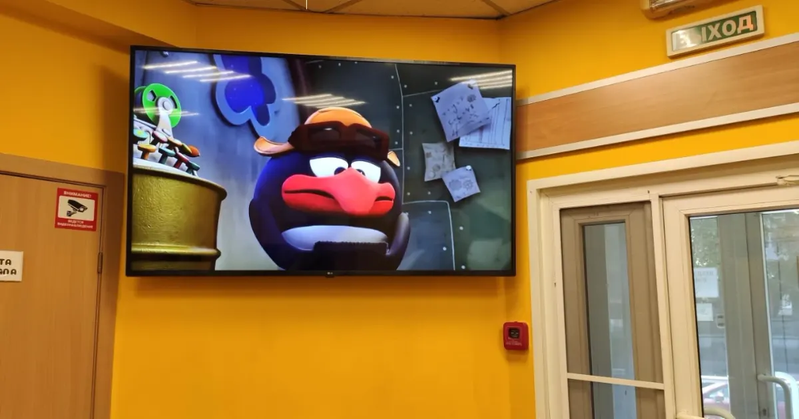
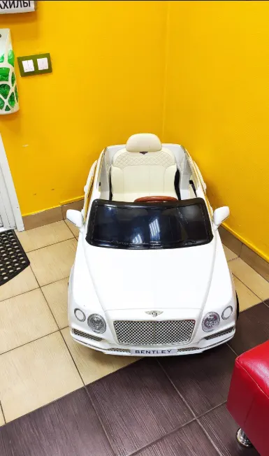

«Врач общался на «ты», отвлекал играми и мультиками.» – Дилдора Серикова, 9 сентября 2026

Новокузнецк · переулок Кулакова, 4
Академия зубных фей
Детская стоматология
Полный спектр услуг по лечению и протезированию зубов с использованием передовых технологий.
Пять вопросов, которые задают родители
Отвечаем на них здесь, пока вы дома, а не у двери кабинета с испуганным ребёнком.
- 1Не будет страшно?
- 2Что будет на приёме?
- 3Сколько это стоит?
- 4Кто будет лечить?
- 5Когда можно прийти?
Услуги
Услуги клиники: от первого осмотра до протезирования
Лечим зубы детям: молочные и постоянные, удаление, протезирование. Цены – с карточки клиники на Zoon, точная сумма определяется после осмотра и составления плана лечения.
Осмотр и консультация
С него начинается любое лечение: врач смотрит, объясняет и называет сумму до начала.
уточнитьЛечение кариеса молочного зуба
Сначала знакомимся с ребёнком, потом лечим. Точная сумма – после осмотра и плана лечения.
6000 ₽Лечение кариеса постоянного зуба
Для тех, у кого зубы уже сменились. Объясняем, что делаем и зачем.
6000 ₽Лечение пульпита молочного зуба
Когда воспалился нерв, зуб лечат, а не оставляют как есть. Сумма – после осмотра и плана.
7500 ₽Удаление зубов
Если зуб спасти нельзя. Родители в отзывах пишут: «Удалили зубки вообще без проблем».
уточнитьПротезирование
Из полного спектра услуг клиники. Подбор и сумму называем после осмотра, по плану лечения.
уточнить
Не знаете, с чего начать? Запишитесь на осмотр: врач посмотрит, объяснит и назовёт сумму по каждому пункту плана.
Записаться
Вопрос 1 · Не будет страшно?
Страх лечится вниманием, а не уговорами
Дети боятся не зуба, а неизвестности. Чем дольше откладываем, тем больше причин бояться.
- Сейчас
Пятно или небольшая полость
Один визит, одна пломба. Часто это видно только на осмотре, жалоб у ребёнка ещё нет.
- Через месяцы
Боль от холодного и сладкого
Кариес дошёл до чувствительных слоёв. Лечение дольше, а первый опыт у врача уже неприятный.
- Потом
Ночная боль и воспалённый нерв
Зуб приходится лечить глубже, а ребёнок идёт к врачу уже со страхом. С этого можно было не начинать.
Поэтому
К страху мы готовимся заранее: в приёмной игры, на экране мультики, врач и ассистент разговаривают с ребёнком по-доброму, а после приёма – подарок за смелость.
Так о клинике пишут родители в отзывах. Это наш подход к приёму, а не обещание, что слёз не будет.
Вопрос 2 · Что будет на приёме?
Сначала знакомимся, потом лечим
Пять шагов, и после каждого вам понятно, что происходит и почему.
Шаг 1Знакомство
Ребёнок осматривается, пока вы заполняете документы: в приёмной есть игры, на экране мультики.
Шаг 2Осмотр
Врач смотрит зубы и разговаривает с ребёнком понятным ему языком, а вам объясняет, что видит.
Шаг 3План
Что лечить и в каком порядке. Точная сумма определяется после осмотра и составления плана лечения.
Шаг 4Цена
По каждому пункту плана. Ориентиры по основным услугам – в блоке «Сколько это стоит».
Шаг 5Решение
Можно начать лечение, можно взять паузу и подумать. Решаете вы.
Записаться
Напишите в WhatsApp, сколько ребёнку лет и что беспокоит, – подберём время.

Вопрос 3 · Сколько это стоит?
Цены видно до записи
Цены – с карточки клиники на Zoon. Точная сумма определяется после осмотра и составления плана лечения.
Осмотр и план уточнить
Врач смотрит, объясняет и составляет план лечения. Сумму называет до начала.
На формуле: все зубыКариес молочного зуба 6000 ₽
Для самых маленьких пациентов. Точная сумма – после осмотра и плана лечения.
На формуле: любой молочный зубКариес постоянного зуба 6000 ₽
Когда зубы уже сменились. Что делаем и зачем – объясняем по ходу.
На формуле: шестой зуб, 3.6Пульпит молочного зуба 7500 ₽
Когда воспалился нерв. Сумма – после осмотра, до начала лечения.
На формуле: зуб 2.6Протезирование и другое уточнить
Из полного спектра услуг клиники. Сумму называем после осмотра, по плану лечения.
На формуле: зуб 4.6Верхняя дугаОсмотр · весь рядНижняя дуга
Вопрос 4 · Кто будет лечить?
Команда, которую дети называют по имени
Родители в отзывах пишут о враче «дяде Диме» и администраторе Кате. Фамилии, специализацию и образование врачей клиника добавит по документам.
«Катя на ресепшн сразу спросила, какой мультик он хочет, и включила.» – Городской жительпза9, 30 августа 2026

Приёмная, где не скучно
- Игровой стендРебёнок сам выбирает игру, пока вы ждёте приём
- Детская машинкаСвоя, в приёмной: можно посидеть и привыкнуть к месту
- Мультики на большом экранеВключают тот, который ребёнок выбрал. Родители пишут, что в кабинете тоже идут мультики
- Подарок после приёма«За смелость»: так о нём пишут в отзывах
Отзывы
Что пишут в 2ГИС
-
«Были просто поражены отношением к детям. Нигде такого не видел. Сразу находят контакт с ребенком. мой сын быстро адаптироваться. Включенный телевизор отвлекал внимание. Лечение кариеса было быстрым и без слёз.»
-
«Ребенок даже не пикнул, пока лечили зуб. Врач общался на «ты», отвлекал играми и мультиками. Всё прошло без слёз, в конце дали подарок»
-
«Ребёнок обычно боится стоматологов, но здесь всё прошло хорошо. Врач нашёл подход, а подарок после приёма очень его порадовал.»
Отзывы скопированы с карточки клиники в 2ГИС без правок.
Вопрос 5 · Когда можно прийти?
Запишите ребёнка на приём
Напишите в WhatsApp или позвоните: подберём время и ответим на вопросы до кресла.